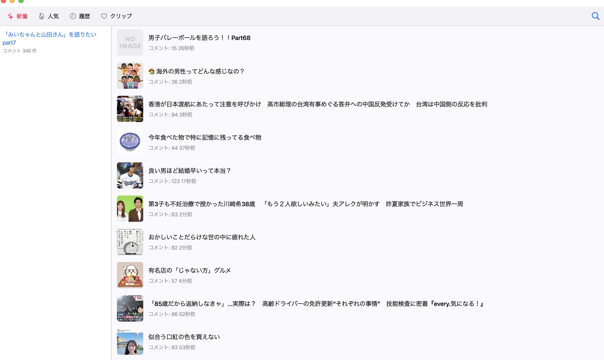

女子の好きな話題を毎日おしゃべり♪ オフラインでもサクサク読める、がるちゃん専ブラ

長文でもスムーズに移動。コメント番号でピタッと復元
キャッシュ対応で電波薄めでも安心
あとで読むをワンタップで保存
人気/新着を横断してすばやく発見
SHA-256: 0123456789abcdef...deadbeef
app-debug.apk をダウンロード → ファイルを開いてインストール。
macOS: Gatekeeper でブロックされた場合は、右クリック → 開く を選んで実行。
Android: 不明なアプリのインストールを許可する必要があります。
新しい .zip を上書きインストールすればOK。設定やキャッシュは保持される想定です。
新しい app-debug.apk をダウンロードしてインストールすれば上書きされます。Play ストアの自動更新は使えません。
不具合は https://x.com/chibikuromoka まで。